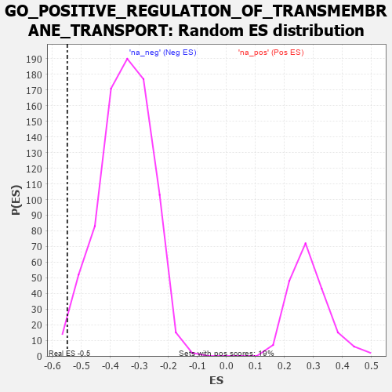

| | | Dataset | 7d |
| Phenotype | NoPhenotypeAvailable |
| Upregulated in class | na_neg |
| GeneSet | GO_POSITIVE_REGULATION_OF_TRANSMEMBRANE_TRANSPORT |
| Enrichment Score (ES) | -0.54851824 |
| Normalized Enrichment Score (NES) | -1.5627999 |
| Nominal p-value | 0.013630731 |
| FDR q-value | 0.1255545 |
| FWER p-Value | 1.0 |
Table: GSEA Results Summary
 Fig 1: Enrichment plot: GO_POSITIVE_REGULATION_OF_TRANSMEMBRANE_TRANSPORT
Fig 1: Enrichment plot: GO_POSITIVE_REGULATION_OF_TRANSMEMBRANE_TRANSPORT
Profile of the Running ES Score & Positions of GeneSet Members on the Rank Ordered List
| PROBE | GENE SYMBOL | GENE_TITLE | RANK IN GENE LIST | RANK METRIC SCORE | RUNNING ES | CORE ENRICHMENT | | 1 | IRS1 | | | 98 | 1.659 | 0.0409 | No |
| 2 | BAX | | | 387 | 0.711 | 0.0274 | No |
| 3 | AKT1 | | | 1040 | 0.476 | -0.0395 | No |
| 4 | KCNC2 | | | 2075 | 0.295 | -0.1605 | No |
| 5 | C2CD5 | | | 2204 | 0.276 | -0.1677 | No |
| 6 | ANO6 | | | 2339 | 0.255 | -0.1765 | No |
| 7 | AZIN2 | | | 2993 | 0.150 | -0.2540 | No |
| 8 | COX17 | | | 3019 | 0.147 | -0.2524 | No |
| 9 | CHP1 | | | 3089 | 0.138 | -0.2567 | No |
| 10 | CDK5 | | | 3480 | 0.080 | -0.3033 | No |
| 11 | ABL1 | | | 4125 | -0.027 | -0.3837 | No |
| 12 | WNK3 | | | 4153 | -0.034 | -0.3860 | No |
| 13 | STAC | | | 4327 | -0.064 | -0.4057 | No |
| 14 | ADRB2 | | | 4352 | -0.068 | -0.4066 | No |
| 15 | MEF2A | | | 4499 | -0.095 | -0.4219 | No |
| 16 | PLCG1 | | | 4770 | -0.151 | -0.4511 | No |
| 17 | TERT | | | 4801 | -0.157 | -0.4499 | No |
| 18 | PDPK1 | | | 5043 | -0.207 | -0.4736 | No |
| 19 | G6PD | | | 5638 | -0.358 | -0.5370 | Yes |
| 20 | WNK1 | | | 5650 | -0.362 | -0.5268 | Yes |
| 21 | CALCR | | | 5730 | -0.386 | -0.5244 | Yes |
| 22 | TRPC6 | | | 5784 | -0.401 | -0.5182 | Yes |
| 23 | KCNQ1 | | | 5918 | -0.441 | -0.5208 | Yes |
| 24 | ACTN2 | | | 5960 | -0.458 | -0.5112 | Yes |
| 25 | STAC2 | | | 5987 | -0.466 | -0.4996 | Yes |
| 26 | STIM1 | | | 6169 | -0.528 | -0.5054 | Yes |
| 27 | INSR | | | 6204 | -0.538 | -0.4924 | Yes |
| 28 | RGN | | | 6233 | -0.547 | -0.4784 | Yes |
| 29 | STK39 | | | 6274 | -0.563 | -0.4654 | Yes |
| 30 | GALR2 | | | 6355 | -0.599 | -0.4562 | Yes |
| 31 | ARF1 | | | 6583 | -0.701 | -0.4623 | Yes |
| 32 | ACSL5 | | | 6643 | -0.737 | -0.4461 | Yes |
| 33 | CCR2 | | | 7003 | -0.939 | -0.4612 | Yes |
| 34 | CFTR | | | 7143 | -1.030 | -0.4457 | Yes |
| 35 | ANK2 | | | 7298 | -1.170 | -0.4275 | Yes |
| 36 | CALM1 | | | 7567 | -1.499 | -0.4132 | Yes |
| 37 | ANK3 | | | 7690 | -1.740 | -0.3727 | Yes |
| 38 | PKD2 | | | 7822 | -2.167 | -0.3196 | Yes |
| 39 | KCNC1 | | | 7835 | -2.249 | -0.2489 | Yes |
| 40 | CALM3 | | | 7869 | -2.525 | -0.1720 | Yes |
| 41 | TCAF1 | | | 7901 | -2.803 | -0.0859 | Yes |
| 42 | NPSR1 | | | 7913 | -2.947 | 0.0073 | Yes |
Table: GSEA details [plain text format]

Fig 2: GO_POSITIVE_REGULATION_OF_TRANSMEMBRANE_TRANSPORT: Random ES distribution
Gene set null distribution of ES for GO_POSITIVE_REGULATION_OF_TRANSMEMBRANE_TRANSPORT